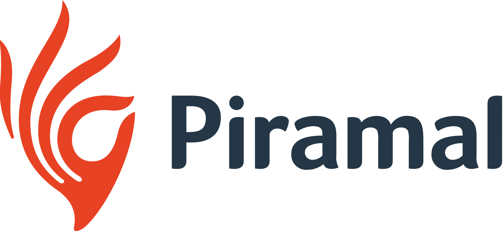

Dr. Sameer Reddy Marri
I solve the chemistry other teams get stuck on — designing and troubleshooting multi-step routes, scaling them from milligrams to hundreds of grams, and building photoaffinity & fluorescent probes that reveal how molecules hit their targets. Eight-plus years spanning Indian CRO industry and US academic drug discovery, guided by cheminformatics-informed decisions.

 Boston University — Postdoctoral Researcher
Boston University — Postdoctoral Researcher
Sai Life Sciences — Research Scientist
Piramal Discovery Solutions — Research Scientist Osmania University — MSc & BSc
Osmania University — MSc & BScThree layers, one chemist
Rigorous organic synthesis as the foundation, translational medicinal chemistry as the output, and chemical-biology & cheminformatics thinking to steer every decision.
Organic chemistry is how I solve problems.
My training and publication record are rooted in azomethine-ylide [3+2] cycloadditions, polyheterocyclic spiro scaffolds, and recyclable nanocatalysis. That foundation still drives how I judge route risk and synthetic feasibility today.
Multi-step sequences, fixing low-yielding steps, stabilising sensitive chemistry.
Spiro-indenoquinoxalines, pyrrolizidines, oxindoles; regio- & diastereoselective.
From mg concept work to reproducible multi-gram delivery in CRO & academic settings.
Multi-step heterocycle synthesis, 1,3-dipolar cycloadditions, nanoparticle & recyclable catalysis, late-stage functionalisation, scale-up troubleshooting.
Translating synthesis into useful discovery output.
At Piramal and Sai Life I executed client drug-discovery programs across oncology, CNS and anti-infectives; at BU I drive SAR and lead optimisation on three infectious-disease targets — balancing potency, selectivity and drug-likeness.
Tuning potency, selectivity and physicochemical properties to reach whole-cell activity.
Oncology, CNS, anti-infective programs under FTE models; 20–30% yield gains, 10–15% cost savings.
Sai Life "Outstanding Contributor" (2021) for on-time, high-quality project delivery.
Leishmania, Cryptococcus (fungal), Orthopoxvirus, oncology, CNS & anti-infective lead series.
A chemist who designs and executes SAR campaigns independently, troubleshoots stuck routes, and drives a series from hit toward development candidate.
Probes that reveal mechanism — and actually work.
I design photoaffinity-label (PAL) and fluorescent probes to capture and identify the molecular targets of phenotypic hits — bridging chemistry and biology so a series can move from "it works" to "we know why."
Minimalist alkyne-diazirine crosslinkers & aryl azides installed at activity-preserving positions.
Fluorescent derivatives for viral protein mapping & antiviral validation.
Whole-cell and cell-lysate assay design with the Brown Lab at the BU Center for Molecular Discovery.
Prof. Lauren E. Brown's lab at the BU Center for Molecular Discovery, with infectious-disease collaborators across BU and partner institutions.
I don't just make compounds — I decide which are worth making.
Docking, SAR data analysis and cheminformatics tools guide my synthetic priorities. A wet-lab chemist with computational context makes faster, better-targeted decisions at the bench.
Glide / PyMOL-guided pose analysis feeding scaffold and substituent decisions.
CADD-based retrosynthetic & SAR planning to propose efficient, prioritised synthetic strategies.
Schrödinger-certified in quality ligand library design & molecular modeling.
Molecular Modeling in Drug Discovery (Schrödinger) · Designing Quality Ligand Libraries (Schrödinger).
Three infectious-disease programs
As a Postdoctoral Researcher in Prof. Lauren E. Brown's lab at the BU Center for Molecular Discovery, I run probe chemistry and lead optimisation across parasitic, viral and fungal targets.
Broad-Spectrum Leishmania Inhibitors
Designing photoaffinity-label probes to covalently capture and identify the molecular target of a broad-spectrum antileishmanial series.
- Probe-tagging strategy guided by structure–activity insight
- Photo-crosslinking chemistry for covalent target capture
- Whole-cell & lysate assay validation
Orthopoxvirus Inhibitors
Developing fluorescent and photoaffinity derivatives of an advanced antiviral series, and making a notoriously sensitive synthetic route reproducible and scalable.
- Fluorescent & PAL derivatives for protein mapping
- Route streamlining for a sensitive, oxidation-prone motif
- Improved reproducibility and scale-up robustness
Fungal-Selective Hsp90 Inhibitors
Designing small-molecule and macrocyclic inhibitors that selectively target fungal Hsp90 over the human ortholog, optimising physicochemical properties for whole-cell activity.
- Selectivity-driven scaffold design
- Tuning physicochemical properties for cell activity
Before academia: 5 years delivering at CRO scale
At Sai Life Sciences and Piramal Discovery Solutions I planned and executed multi-step syntheses for global pharma partners — handling pyrophoric and corrosive reagents at bulk scale and troubleshooting what broke on the way up.
From Hyderabad bench to Boston discovery
A path across microbiology, organic methodology, CRO process chemistry and academic chemical biology — each step adding a layer to how I approach discovery.
Foundations in life & organic chemistry
BSc Microbiology, Biochemistry & Chemistry → MSc Organic Chemistry.
BSc · MScMPhil & PhD — methodology & catalysis
Polyheterocyclic spiro compounds via azomethine-ylide [3+2] cycloadditions; recyclable GO, ZnO & Fe₃O₄ nanocatalysis. DST-SERB butanolide natural-product project (2014–16).
PhD, ChemistryResearch Scientist — discovery synthesis
Designed routes for oncology, CNS & anti-infective leads under FTE models. Troubleshot scale-up for 20–30% yield gains and 10–15% cost savings.
CRO · DiscoveryResearch Scientist — scale-up & tech transfer
Multi-gram synthesis of drug-like molecules, route optimisation, and tech-transfer packages for CDMOs. Mentored 3 junior scientists.
★ Outstanding Contributor Award, 2021Postdoctoral Researcher — chemical biology
Photoaffinity & fluorescent probe design and SAR across three infectious-disease programs (Leishmania, orthopoxvirus, fungal Hsp90) in the Brown Lab.
Current rolePeer-reviewed methodology & catalysis
A record built on green, recyclable catalysis and selective heterocycle construction — 295+ citations across Google Scholar.
An Expedient Regio- and Diastereoselective Synthesis of Novel Spiro-pyrrolidinylindenoquinoxalines
Graphene Oxide as a Recyclable Catalyst for Azomethine Ylide Cycloaddition
Ecofriendly Iron-Oxide Nanoparticle Catalyst for Michael Addition
Isatin N,N′-Cyclic Azomethine Imine Cycloaddition for Isoxazole-containing Spirooxindoles
Where the bench meets the screen
Hands-on synthetic depth, full analytical coverage, and the computational toolkit to prioritise it all.
Synthesis & Process
Analytical & Characterisation
Chemical Biology & Med Chem
Computational & Data
Docking, CADD-based SAR & retrosynthetic planning · electronic lab notebooks · tech-transfer documentation.
Recognition & Memberships
Leadership & Collaboration
Let's talk chemistry.
Senior / staff scientist roles in medicinal chemistry, chemical biology, process development and cheminformatics — Boston-based, open to relocation anywhere in the US.